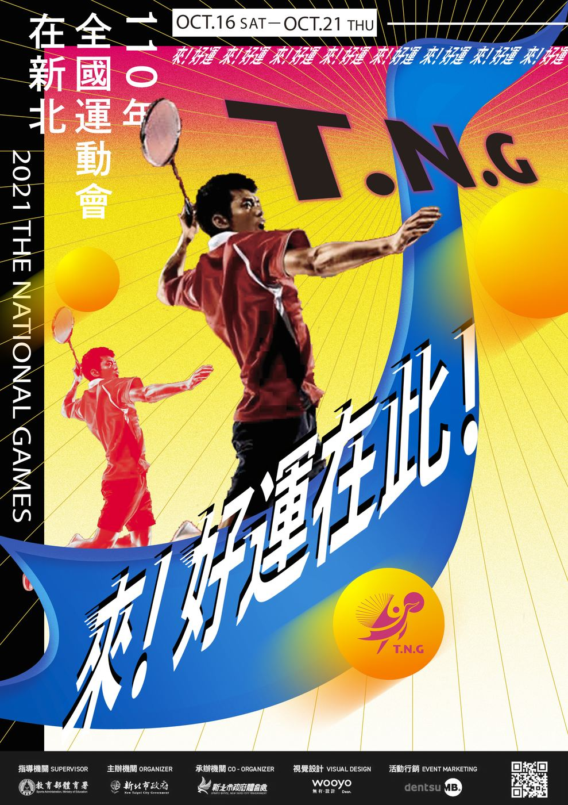
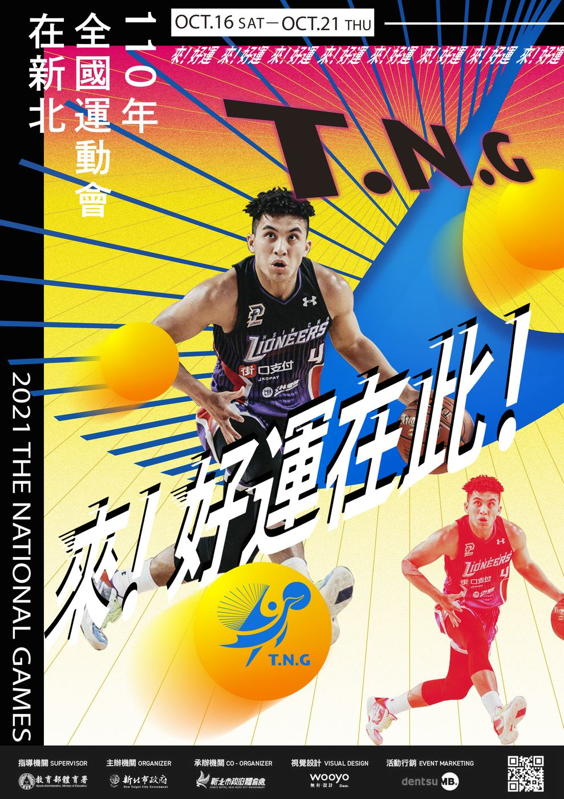
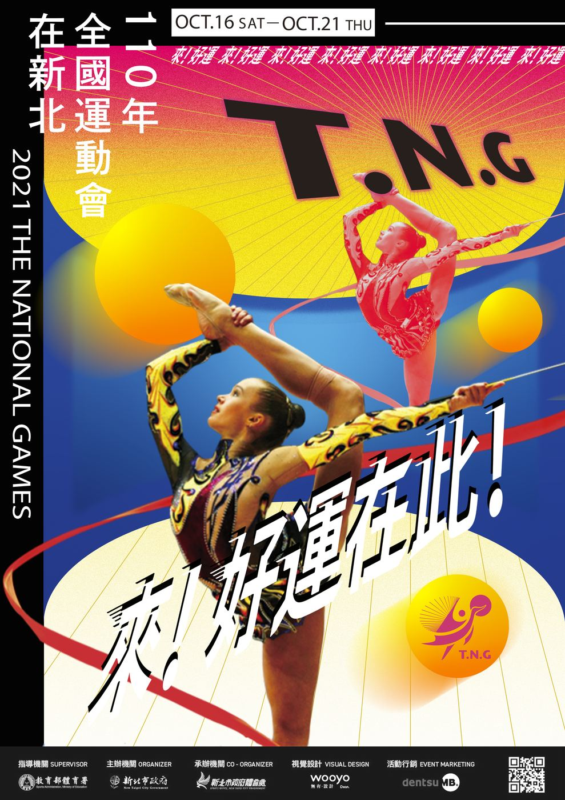
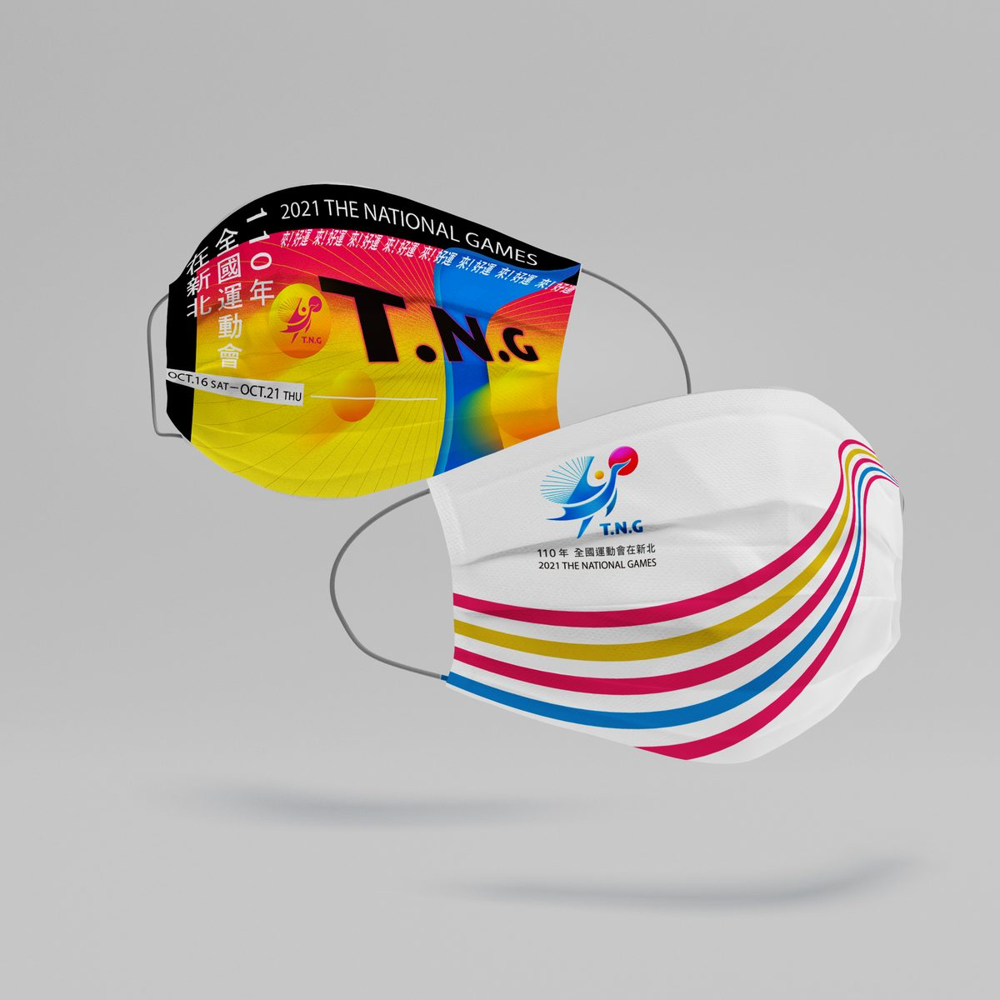
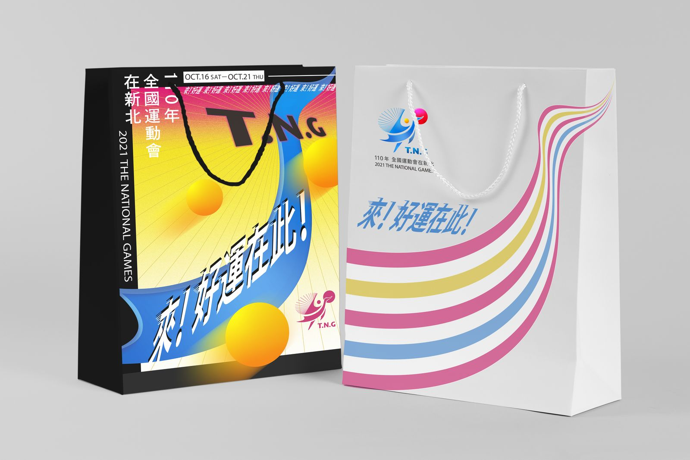

A self-initiated proposal for the 2021 National Games hosted in New Taipei City. The design derives a single core concept — Good Fortune (好運) — from the convergence of three strategic axes: national unity through sport, New Taipei's multicultural identity, and the city's vision of becoming a healthy, active metropolis. The result is a visual identity system built not on prestige, but on optimism.
以個人提案形式為2021年全國運動會設計主視覺識別系統。從全運會、新北市、侯友宜三軸策略出發，推導出「好運」作為核心概念——運動健康城市 = 好運動的環境 = 好運。在防疫低迷的時代背景下，打造凝聚民心、充滿正能量的賽事視覺語言。
策略推導從三個方向交叉定位：全運會以「凝聚、榮耀」為旗幟，訴諸運動賽事的熱血與共同體感；新北市以「樂、多元文化、平等」為底色，強調移民城市的包容特質；侯友宜市長以「好」為政治語彙，長期建立厚道親民的形象。三線交會，得出一個簡單卻有說服力的核心——
Three strategic axes intersect: the National Games carrying "unity and glory" as its banner; New Taipei's identity as Taiwan's most diverse immigrant city, defined by joy and equality; Mayor Hou's political language of goodness and accessibility. Three lines converge on one simple, persuasive core —
運動健康城市 = 好運動的環境 = 好運 · 凝聚榮耀 = 齊心 = 平等 · 樂 = 好
好運！
GOOD FORTUNE · GOOD SPORT · GOOD CITY
「好運」同時承載三重含義：好的運動（健康城市願景）、齊心好運（全民凝聚）、以及最直白的正向祝福。提案的核心目標：讓人看一眼就感受到「新北辦了這場全運會，是一件好事」。
"好運 · Good Fortune" carries three meanings simultaneously: good sport (the healthy city vision), collective luck (national unity), and the most direct positive wish. The proposal's core goal: make someone feel in a single glance that New Taipei hosting this Games is simply a good thing.
主商標以「好運」的正圓造型為核心，融合動態感與新北市色彩計畫，並配合各項賽事ICON延伸整套識別系統。
The primary mark is built around a dynamic circular form expressing "Good Fortune," incorporating the New Taipei City colour palette and extending across event-specific icons to complete the identity system.


各運動項目ICON以主商標造型語言為骨架延伸，統一風格下保持各項目的辨識性。
Each sport icon extends from the primary mark's formal language — maintaining unified style while preserving individual event recognisability.

「好運！」不只是slogan，也是整套視覺語言的視覺錨點——最大、最直接、最有記憶點。
"Good Fortune!" functions not just as a slogan but as the visual anchor of the entire identity — the largest, most direct, most memorable element.

主視覺海報以好運意象為骨架，發展出三款各有側重的版本，可依場合與受眾靈活選用。
Three poster variants develop the Good Fortune concept, each with distinct emphasis — deployable across contexts and audiences.



從戶外看板到隨身物件，識別系統在各個接觸點保持一致的好運氛圍與視覺張力。
From outdoor billboards to personal items, the identity maintains consistent Good Fortune energy and visual tension across every touchpoint.





.png)
.png)
.png)
這是一份個人主動提案，不是委託案。沒有簡報可以問、沒有客戶可以調整方向——只有從公開資訊推導策略，然後讓設計自己說話。「好運」作為核心概念的強項在於它的多義性：它是口語的、是吉祥的、是體育的，也是政治的，讓不同背景的受眾都能找到自己的入口。
This was a self-initiated proposal — no brief to interrogate, no client to redirect. Strategy had to be derived purely from public information, and the design had to speak for itself. The strength of "Good Fortune" as a core concept is its polysemy: colloquial, auspicious, athletic, and political — every audience finds their own way in.